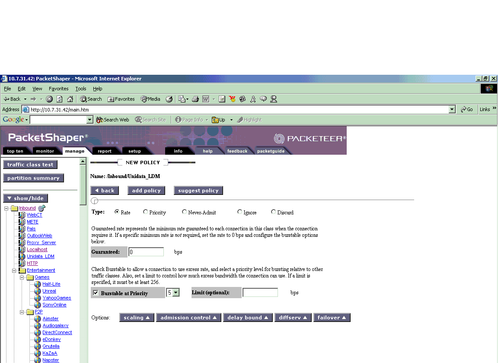
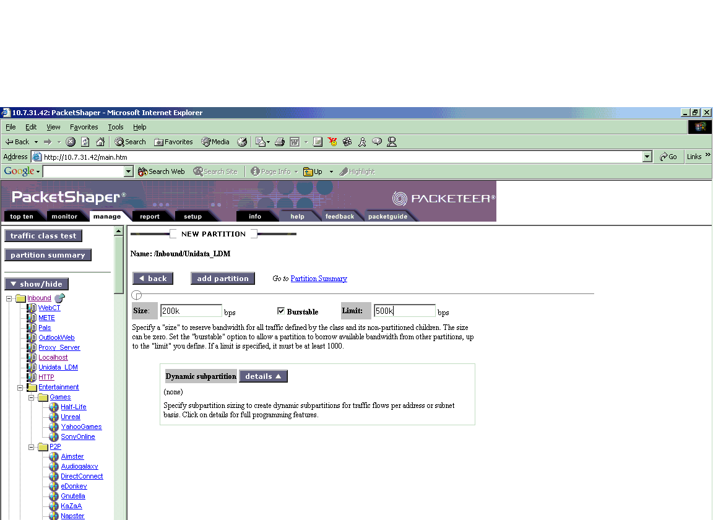
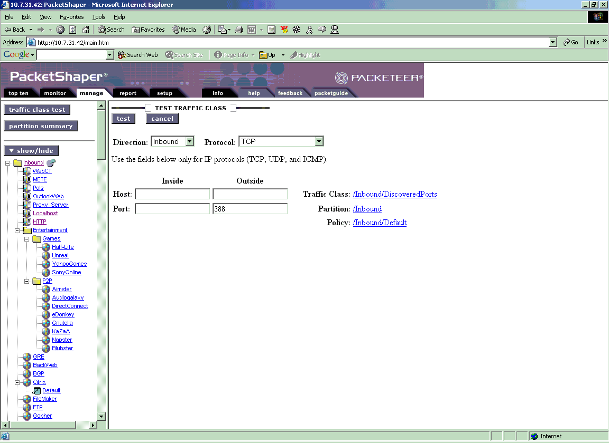

Recently a few of our sites experienced data reception that was severely throttled or stopped for no apparent reason. Symptoms were inconsistent and somewhat sporadic and included:
In some cases a subset of products got through, but in other cases nothing got through.
We determined that Packetshaper had been installed at these sites. Packetshaper is a product developed by Packeteer to analyze and "shape" network traffic. It is often used to limit traffic from low priority applications. Packetshaper is a box that generally sits between a router and switch. Thus, there's no way to tell whether it's running except to ask your network administrator.
Packetshaper can discriminate traffic based on port number, IP address, application, protocol, subnet, URL, and other criteria. But if it's mis-configured, LDM traffic can be adversely affected.
If you determine that Packetshaper is running at your site, perhaps the easiest way to determine if it is affecting your data flow is to ask your network engineer to turn it off for 30 minutes. If your data reception quickly improves, it's reasonable to assume that Packetshaper was not properly configured. With technical help from Packeteer, we are providing the instructions below for configuring Packetshaper to allow LDM traffic to flow.
Note: when buying Packetshaper, sites have an option to purchase support. Please check to see if your contract includes support. If you have support, you should use that, as these pages may become outdated.
Note: Technical support at Packeteer recommends that the Packetshaper be upgraded to the current software version, 5.2.2 if they have not done so already. Performance of the rate policies is improved over previous versions. Also, Packeteer is regularly adding applications to the "autodiscover" process, which are made available via upgrades.
To isolate this traffic it will be necessary to create two classes to capture traffic on this port. One will be an inbound class, the other will be outbound. For each class we will
Each class, both inbound and outbound, will contain two matching rules. One rule will match the ports "inside:any" and "outside:388". The other rule will match ports "inside:388" and "outside:any". This will allow us to catch traffic on port 388 on either side regardless of whether the machine is a server or client. (Technically, an LDM site can switch roles, so that at any time it may be either a client or a server.)
To create the inbound class, first click the "/Inbound" folder in the left frame. This will take you to the manage page for the root /inbound folder. Click the "class" button, then "add" in the dropdown menu. This will take you to the page shown here:
First, name the class.
Next, we will specify two rules for the class. When creating a new traffic class, the Packetshaper automatically adds at least one matching rule. For the first rule, choose location "any", then specify an inside port of "any" and an outside port of "388". All other fields are left as their defaults. Click "add class".
To add the second rule, return to the manage page, click the "class" button once again, then "add matching rule". This will take you to a class which is identical to the newclass page, except it will be missing the class name. Add another rule that will match ports "inside:388" "outside:any". Click "add rule" and the class is complete.
This now takes us to the manage page for the LDM class:

Choose Type: "Exception" then "Apply Changes". The Packetshaper classifies traffic from top to bottom, so this will move the class toward the top of the tree.
All classes get priority 3 by default. To prioritize this traffic one can give it a higher rate policy. First, on the manage page for the class, click the "Policy" button then "add" to get the following page:

On this screen you can choose to add either a rate policy, or a priority policy. The page Selecting and Using Policies describes the differences between both types of policies and when it is appropriate to use each type. For the LDM, it is recommended that you set a rate policy because this allows reservation of bandwidth. Packeteer technical support recommends setting the rate policy to Priority 5. Although Priority 7 is the highest, very high rate policies should be used with caution because they tend to starve those traffic types with lower-priority policies if the traffic type is persistent and particularly aggressive. A rate 5 is usually sufficient.
With a rate policy you are required to fill out several fields. First, enter 0 for "Guaranteed". Check the "burstable" box, then choose Priority 5 from the dropdown menu. Upper limit should be left blank. Click "add policy" to complete the process.
There is also an option to add a bandwidth partition for the class. The most important difference between a policy and a partition is that a policy will work on individual flows, while a partition will work on the aggregate of all flows within the partition. So if a traffic type is particularly delay sensitive it is usually a good idea to guarantee some bandwidth to the class as a whole.
To add a partition go to the manage page for the class and click on "partition" (and then "add"?) to get this window:

The "size" specifies the reserved bandwidth for this traffic type. This can remain fixed by unchecking the "burstable" box, or a "limit" can be specified up to which it can burst. If the upper limit is left blank, the traffic will be allowed to burst up to the link rate. Otherwise, it will be capped. Click "add partition" to complete the process. In this example, all LDM traffic is guaranteed 200k. It will not compete for these 200k with any other traffic types but if LDM does not need all 200k, the remaining bandwidth will be available to classes outside the partition. When it reaches 200k, if it needs more bandwidth, then it will receive it based on the policy on the class. In this case it is a rate policy with 0 guaranteed, and burstable at priority 5.
(If you would like help in estimating the volume of data to your site, please send email to support@unidata.ucar.edu. Please include the 'request' lines from your ldmd.conf file.)
This completes the class in the /Inbound folder.
Now to duplicate the inbound class in the /Outbound folder, simply click the "class" button once again, choose "copy" then choose "Outbound/" for the destination. This will copy the class along with any policies and partitions to the /outbound folder.
This is an image of the Traffic Test screen:

To get to this screen click the "Manage" tab, then the "traffic class test" button on the upper right side. You will then get the screen in the image.
To test, enter the server port number 388 then click "test". This will list the traffic class which is currently classifying this traffic. You can also test for both directions of traffic flow, Inbound and Outbound to make doubly sure. Most likely, it will be going to DiscoveredPorts/TCP_Port_388.
Thanks and appreciation to Andres Escalera from Packeteer for his assistance in providing these instructions and the screen images.